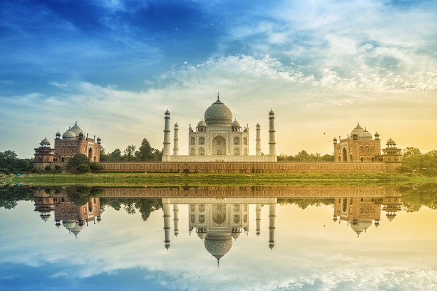
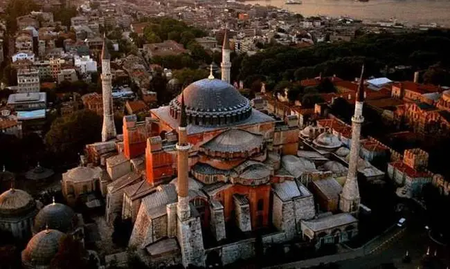
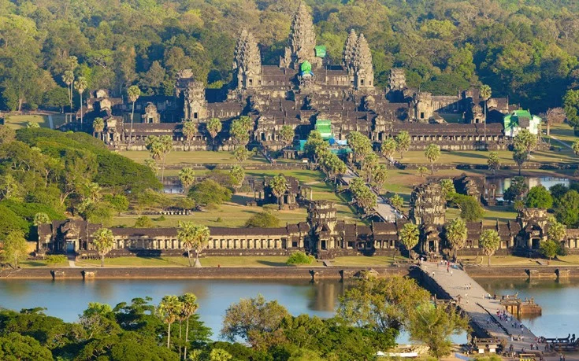
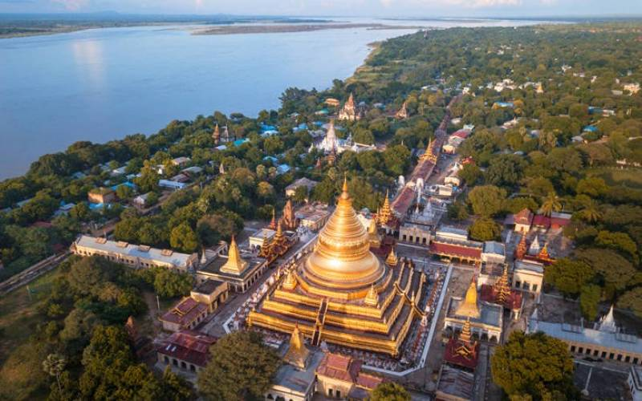
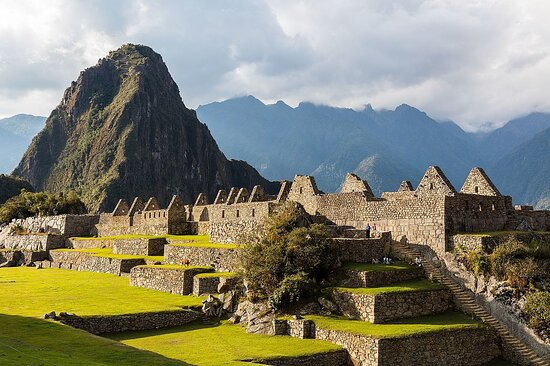
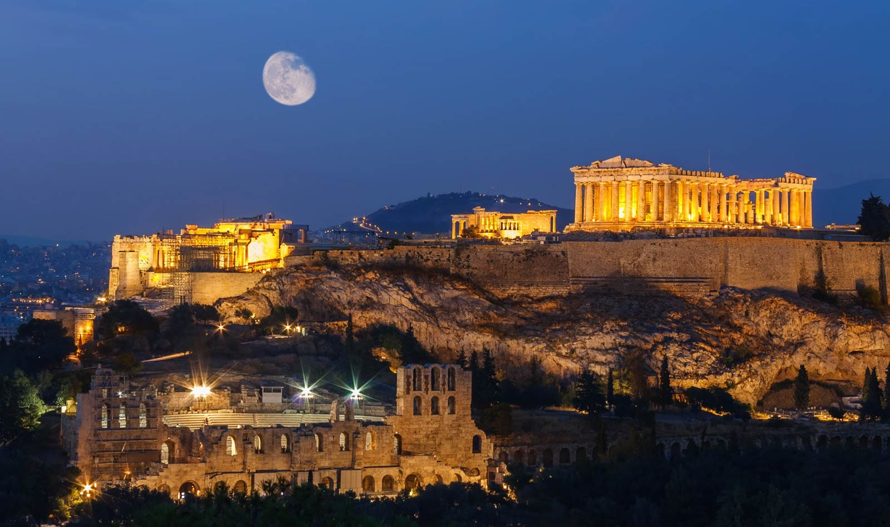
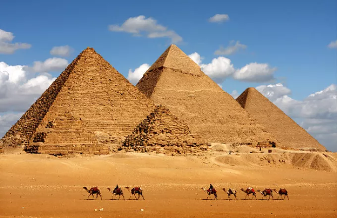
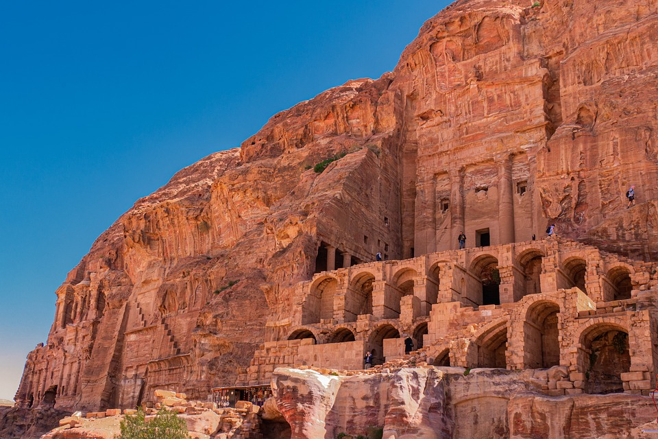
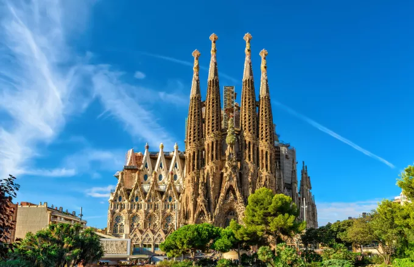
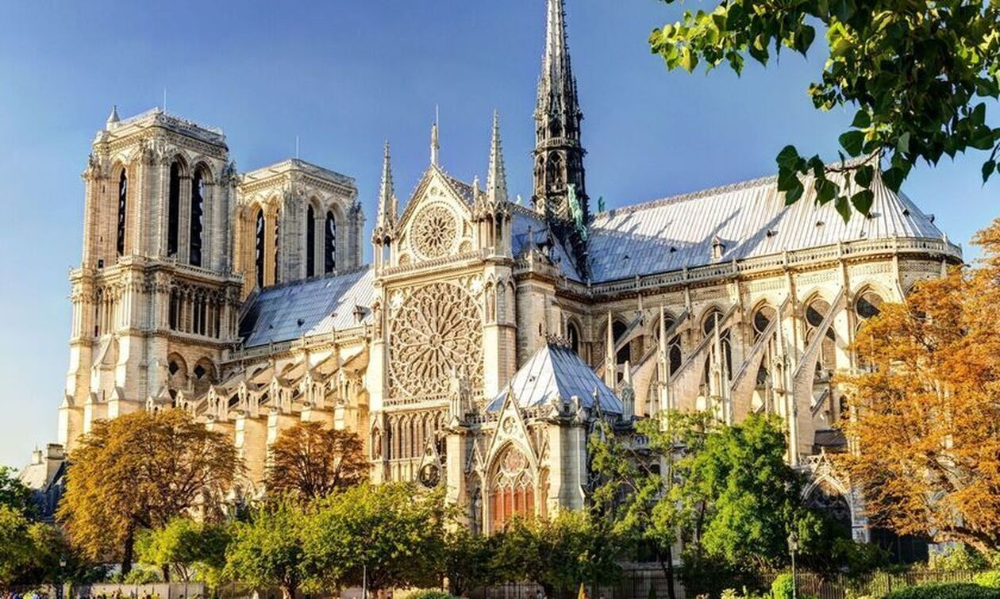

Ας γνωρίσουμε τα 10 κορυφαία μνημεία Παγκόσμιας Κληρονομιάς της UNESCO. Πρόκειται για
τα σπουδαιότερα μνημεία του κόσμου με πολιτιστικό, αρχιτεκτονικό και θρησκευτικού χαρακτήρα.
1. Ταζ Μαχάλ (Άγκρα, Ινδία)
Το Ταζ Μαχάλ είναι το πιο γνωστό και αντιπροσωπευτικό μνημείο της Ινδίας και το σημαντικότερο τουριστικό
αξιοθέατο της χώρας καθώς συγκεντρώνει εκατομμύρια τουριστών από όλο τον κόσμο. Βρίσκεται κοντά στην
πόλη
Άγκρα της βόρειας Ινδίας, στις όχθες του ποταμού Γιούμα. Κατασκευάστηκε από τον μογγόλο αυτοκράτορα Σαχ
Γιαχάν
Α’, τον 17ο αιώνα, στη μνήμη της συζύγου του που την αποκαλούσε “Μουμτάζ Μαχάλ” (σημαίνει “Κορώνα του
Παλατιού”) η οποία πέθανε κατά την διάρκεια γέννας το 1631. Μετά από 22 χρόνια εντατικών έργων, το
εντυπωσιακό
μνημείο προς τιμήν της ολοκληρώθηκε και έγινε γνωστό ως “Ταζ Μαχάλ”.

2. Αγ. Σοφιά (Κωνσταντινούπολη, Τουρκία)
Η Αγία Σοφία ή Αγια-Σοφιά (ή “Ναός της Αγίας του Θεού Σοφίας) είναι ένα από τα σημαντικότερα
θρησκευτικά
μνημεία για τους Χριστιανούς σε όλο τον κόσμο αλλά προσελκύει τουρίστες και επισκέπτες της
Μουσουλμανικής
θρησκείας λόγω της ιστορίας του. Τα εγκαίνιά του τελέστηκαν στις 27 Δεκεμβρίου του 537 και μέχρι την
Άλωση της
Κωνσταντινούπολης το 1453 λειτουργούσε ως εκκλησία. Στην συνέχεια μετατράπηκε σε μουσουλμανικό τέμενος
και το
1934 με απόφαση του Κεμάλ Ατατούρκ σε μουσείου. Από το 2020 έπειτα από την απόφαση του Τούρκου
προέδρου Ερντογάν, λειτουργεί και πάλι ως τζαμί.

3. Άνγκορ Βατ (Άνγκορ, Καμπότζη)
Το σύμπλεγμα των ναών ηλικίας 900 ετών,
γνωστό ως “Άνγκορ Βατ”, στην περιοχή Άνγκορ της Καμπότζης χτίστηκε για
τον βασιλιά των Χμερ Σουριαβαρμάν Β΄ κατά τον 12ο αιώνα ως ο κύριος ναός λατρείας αφιερωμένος στον
Βισνού και
πρωτεύουσα του κράτους του. Αποτελεί σύμβολο για την Καμπότζη, αφού εμφανίζεται στη σημαία της χώρας από
το
1863 καθώς και το κύριο τουριστικό αξιοθέατο της χώρας.

4. Πόλη Μπαγκάν (Μπαγκάν, Μιανμάρ)
Το συγκρότημα του Μπαγκάν είναι η παλιά, εντυπωσιακή, αυτοκρατορική πρωτεύουσα της Μιανμάρ (ως το 1989
ήταν
γνωστή ως Βιρμανία και παλαιότερα ως Μπούρμα) αλλά σήμερα έχουν διασωθεί ελάχιστα τμήματά της και
ερείπια
επιβλητικών ναών, ανάμεσά τους και 2.200 ναοί και παγόδες. Από τον 9ο μέχρι τον 13ο αιώνα ήταν
πρωτεύουσα του
βασιλείου του Παγκάν και στην περίοδο της ακμής του βασιλείου (από το 1044 μέχρι το 1287)
κατασκευάστηκαν πάνω
από 10.000 βουδιστικοί ναοί, παγόδες και μοναστήρια ενώ η πόλη έφθασε να έχει 200.000 κατοίκους.

5. Μάτσου Πίτσου (Σιέρρα Βιλκαμπάμπα, Περού)
Το ιστορικό “Iερό” του
Μάτσου Πίτσου στις Άνδεις του Περού υπάρχει σε κάθε λίστα με τα Top10 “Μνημεία
Πολιτιστικής Κληρονομιάς” της UNESCO από την δεκαετία του’ 80 ως σήμερα. Αυτό συμβαίνει γιατί είναι μια
ολόκληρη πόλη που εγκαταλείφθηκε από τους Ίνκας τον 15ο αιώνα, παρέμεινε κρυμμένη (και σχεδόν ανέγγιχτη)
μέχρι
την ανακάλυψή της στις 24 Ιουλίου του 1911 από τον Αμερικανό ιστορικό και αρχαιολόγο Χίραμ Μπίνγκαμ, που
την
αναζητούσε για χρόνια βασισμένος σε μυθολογικές αναφορές και τοπικές ιστορίες. Βρίσκεται σε υψόμετρο
2700
μέτρων στη Σιέρρα Βιλκαμπάμπα, στην αριστερή όχθη του παραπόταμου του Βιλκανότα, σε απόσταση 80
χιλιομέτρων
από την πόλη Κούσκο. Η ονομασία “Μάτσου Πίτσου” στη γλώσσα Κέτσουα σημαίνει “αρχαίο βουνό”.

6. Ακρόπολη (Αθήνα, Ελλάδα)
Η Ακρόπολη των Αθηνών είναι ο πιο σημαντικός αρχαιολογικός χώρος στην Ελλάδα και βρίσκεται στον ομώνυμο
βραχώδη λόφο που δεσπόζει στο κέντρο της σύγχρονης Αθήνας.
Στην Ακρόπολη βρισκόταν το σπουδαιότερο και μεγαλοπρεπέστερο ιερό της αρχαίας πόλης αφιερωμένο στην
προστάτιδα
θεά της πόλης: την Αθηνά. Στην Ακρόπολη υπάρχουν τρεις αρχαίοι ναοί, ο Παρθενώνας, το Ερέχθειο και ο
ναός της
Απτέρου Νίκης. Ο λόφος είναι απρόσιτος απ’ όλες τις πλευρές εκτός της δυτικής, όπου και βρίσκεται η
οχυρή
-μνημειακή πλέον – είσοδος, η διακοσμημένη με τα λαμπρά “Προπύλαια”. Όλα τα μνημεία της Ακρόπολης είναι
κατασκευασμένα από Πεντελικό μάρμαρο και χτίστηκαν κατά τον λεγόμενο “Χρυσό Αιώνα” του Περικλή (450-330
π.Χ.).
Είναι ένα αναγνωρισμένο μνημείο παγκόσμιας ακτινοβολίας.

7. Πυραμίδες της Γκίζας (Γκίζα/Κάιρο, Αίγυπτος)
Οι πυραμίδες της Γκίζας κατασκευάστηκαν πριν από 4500 χρόνια (μεταξύ 2580 και 2560 π.Χ.) και είναι οι
σημαντικότερες και πιο διάσημες Πυραμίδες της Αιγύπτου. Στην αρχαία Νεκρόπολη της Γκίζας ξεχωρίζουν οι
τρεις
μεγάλες πυραμίδες της Τέταρτης δυναστείας: η Πυραμίδα του Χέοπα (γνωστή και ως “η Μεγάλη Πυραμίδα”), η
Πυραμίδα του Χεφρήνου και η Πυραμίδα του Μυκερίνου. Σκοπός κάθε πυραμίδας ήταν να «στεγάσει» το νεκρό
Φαραώ
κατά τη διάρκεια της μεταθανάτιας ζωής του. Μαζί με μικρότερες πυραμίδες (των βασιλισσών), νεκρικούς
ναούς,
Μαστάμπες και τάφους αξιωματούχων σχημάτιζαν ένα απέραντο συγκρότημα στην Νεκρόπολη της Γκίζας, όπου
ανήκει
και η περίφημη “Μεγάλη Σφίγγα”. Η Πυραμίδα του Χέοπα είναι η αρχαιότερη (από το 2560 π.Χ.) και η
μεγαλύτερη
από τις τρεις πυραμίδες της Νεκρόπολης της Γκίζας, η οποία συνορεύει με την πόλη της Γκίζας και τα
περίχωρα
του Καϊρου. Είναι το αρχαιότερο από τα Επτά θαύματα του αρχαίου κόσμου και το μοναδικό που διασώζεται ως
τις
μέρες μας.

8. Πέτρα (Τζεμπέλ Αλ-Μαντχμπάχ, Ιορδανία)
Η σημερινή “Πέτρα” είναι η αρχαία πρωτεύουσα των Ναβαταίων (ή Ναμπάτου όπως τους αποκαλούσαν οι
Μεσοποτάμιοι
λαοί) που εγκαταλείφθηκε το 663 μ.Χ. και ο κορυφαίος τουριστικός προορισμός της Ιορδανίας. Θεωρείται ένα
από
τα πιο εντυπωσιακά ανθρώπινα δημιουργήματα, μοναδικής ομορφιάς και πολιτιστικής αξίας. Πρόκειται για ένα
σύμπλεγμα 30 διαφορετικών χώρων σε μια ακτίνα 60 χιλιομέτρων, με ναούς, τάφους και εκπληκτικής
αρχιτεκτονικής
κτίρια, λαξευμένα πάνω σε μαλακά ψαμμιτικά πετρώματα ροζέ ασβεστόλιθου. Το πραγματικό όνομα της πόλης
είναι
“Ράκμου” που στην γλώσσα των Ναβαταίων σημαίνει “Βράχος με χρωματιστές ραβδώσεις”. Το όνομα “Πέτρα”
δόθηκε από
Έλληνες εμπόρους σύμφωνα με τον αρχαίο Έλληνα ιστορικό, Ιερώνυμο τον Καρδιανό. Ο πρώτος δυτικός
εξερευνητής
που είδε την πόλη Πέτρα, μετά την εγκατάλειψη της από τους κατοίκους της, ήταν ο Ελβετός Γιόχαν Λούντβιχ
Μπούρκχαρντ τον Αύγουστο του 1812. Από τότε έγινε ξανά τουριστικό και θρησκευτικό αξιοθέατο
προσελκύοντας
τουρίστες από όλο τον κόσμο.

9. Σαγράδα Φαμίλια (Βαρκελώνη, Ισπανία)
Η Βασιλική και Εξαγνιστική Εκκλησία της Αγίας Οικογενείας (γνωστή και ως “Σεγράδα Φαμίλια”) είναι η
επιβλητική
ρωμαιοκαθολική εκκλησία στη πόλη της Βαρκελώνης (στην ημιαύτονομη επαρχία της Καταλονίας) στην Ισπανία,
με το
μοναδικό γοτθικό και μετα-μοντέρνο αρχιτεκτονικό σχεδιασμό που φέρει την υπογραφή του παγκοσμίου φήμης
Καταλανού αρχιτέκτονα Αντόνι Γκαουντί. Αν και ημιτελής ως σήμερα, η εκκλησία εγκαινιάστηκε το Νοέμβριο
του
2010, καθαγιάστηκε από τον Πάπα Βενέδικτο ΙΣΤ΄ και έγινε Βασιλική, ώστε να μπορούν να τελεσθούν η Θεία
Λειτουργία και άλλα μυστήρια υπό την παρουσία πιστών. Το έργο ανέγερσής της ξεκίνησε το 1882 αλλά
πέθανε ο
Γκαουντί το 1926, είχεολοκληρωθεί λιγότερο από το ένα τέταρτο του έργου. Η νέα ημερομηνία ολοκλήρωσης
είναι το
2026, προκειμένου να συμπέσει με την επέτειο των 100 ετών από το θάνατο του Γκαουντί.

10. Παναγία των Παρισίων (Παρίσι, Γαλλία)
Η “Νοτρ Νταμ ντε Παρί”, γνωστή στα ελληνικά ως “Παναγία των Παρισίων” (και στην Γαλλία απλά ως “Νοτρ
Νταμ”)
είναι ο μητροπολιτικός Ρωμαιοκαθολικός ναός της πόλης του Παρισιού. Αποτελεί ένα από τα πλέον θαυμαστά
αρχιτεκτονικά μνημεία του γοτθικού ρυθμού (για την ακρίβεια του λεγόμενου “οξυκόρυφου” ρυθμού) και
βρίσκεται
στη νησίδα Ιλ ντε λα Σιτέ του ποταμού Σηκουάνα, στο κέντρο της πρωτεύουσας της Γαλλίας. Πριν από την
εμφάνιση
του Χριστιανισμού στην Γαλλία, στην θέση που είναι χτισμένη σήμερα η “Παναγία των Παρισίων”, υπήρχε ένας
Ρωμαϊκός ναός αφιερωμένος στον Δία, πάνω στα θεμέλια του οποίου θεμελιώθηκαν διαδοχικά 4 χριστιανικοί
ναοί. Η
κατασκευή του σημερινού επιβλητικού ναού άρχισε το 1163 με τις ευχές του Πάπας Αλέξανδρου Γ΄, ο οποίος
και
έβαλε τον θεμέλιο και την οικονομική ενίσχυση του Βασιλιά Λουδοβίκος Ζ΄ της Γαλλίας. Ο Ναός
αποπερατώθηκε το
1260 αλλά υπέστη σημαντικές αλλαγές το 1699 κατά την διάρκεια έργων συντήρησης και αποκαταστάσεων της
φθοράς
του χρόνου. Στις 15 Απριλίου του 2019, κατά τη διάρκεια έργων αποκατάστασης του ναού, ξέσπασε πυρκαγιά
η οποία οδήγησε σε κατάρρευση της οροφής και του κεντρικού οβελού της εκκλησίας. Από τότε ξεκίνησαν οι
εργασιες αποκατάστασης οι οποίες μόλις ολοκληρώθηκαν και ο Ναός θα ανοίξει τις πύλες του στις 8
Δεκεμβρίου 2024 με μια εντυπωσιακή τελετή.
